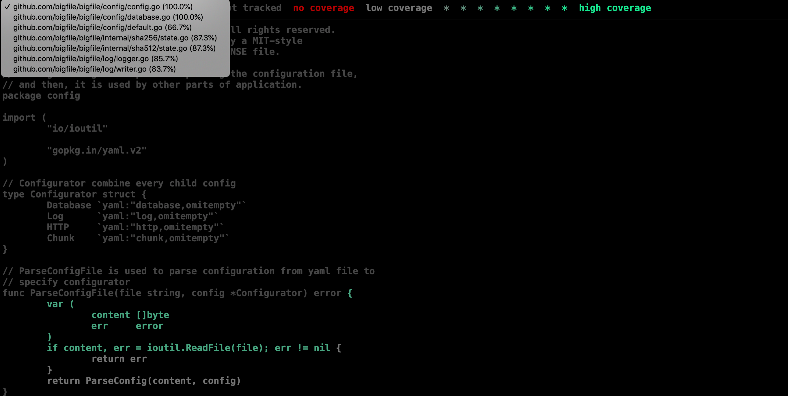
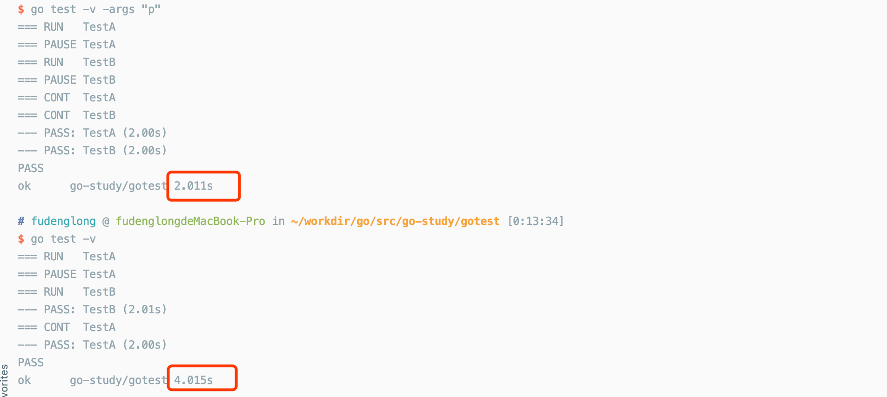

我强烈地意识到我余生很大一部分工作都用来寻找我程序中的bug
测试是自动化测试的简称，即编写简单的程序来确保程序（产品业务代码）在测试中针对特定输入产生期望的输出。这些测试要么是经过精心设计之后用来检测某种功能，要么是随机性的，用来扩大测试的覆盖面。Go 中的测试方法看上去相对比较低级，它依赖于命令 go test 和一些能用 go test 运行的测试函数编写约定。实际上，编写测试函数和编写原始程序没什么区别。
go test 工具
go test 子命令是 Go语言包的测试驱动程序，这些包根据某些约定组织在一起。在一个包目录中，以 _test.go 结尾的文件不是 go build 命令编译的目标，而是 go test 编译的目标。在 *_test.go 中，三种函数需要特殊对待，即功能测试函数，基准测试函数和示例函数。功能测试函数是以 Test 前缀命名的函数，用来检测一些程序逻辑的正确性，go test 运行测试函数，并且报告结果是 PASS 还是 FAIL。基准测试函数的名称是以 Benchmark 开头，用来测试某些操作的新能，go test 回报操作的平均时间。示例函数是以 Example 开头，用来提供机器检查过的文档。
go test 工具扫描 *_test.go 文件来寻找特殊函数，并生成一个临时的 main 包来调用它们，然后编译并且运行，并汇报结果，最后清空临时文件。
go test 命令常用的参数如下：
| 标记名称 | 标记描述 |
|---|---|
-c |
生成用于运行测试的可执行文件，但不执行它。这个可执行文件会被命名为“pkg.test”，其中的“pkg”即为被测试代码包的导入路径的最后一个元素的名称。 |
-i |
安装/重新安装运行测试所需的依赖包，但不编译和运行测试代码。 |
-o |
指定用于运行测试的可执行文件的名称。追加该标记不会影响测试代码的运行，除非同时追加了标记-c或-i。 |
-v |
打印所有运行的测试案例，也会打印出 Log 和 Logf 的输出。 |
-run |
参数值是一个正则表达式，它可以使得 go test只运行那些功能测试函数名称匹配给定模式的函数。 |
-bench |
指定需要运行的基准测试函数要匹配的模式。 |
-args |
指定命令行参数 |
-parallel |
并发执行，默认值为 GOMAXPROCS |
-timeout |
全部测试案例累计时间超过将引发panic |
-count |
重复测试次数 |
接下里我们都对这个源码文件进行测试，命名为：github.com/gamelife1314/go_study/fib/fib.go
1 | package fib |
功能测试
对于功能测试来说，其名称必须要以 Test 为前缀，并且参数列数中有且只有一个 *testing.T 类型的参数声明。请看下面案例：
1 | package fib |
启动命令：go test -v github.com/gamelife1314/go_study/fib 运行测试案例，输出如下：
=== RUN TestFib
--- FAIL: TestFib (0.00s)
fib_test.go:7: 开始测试Fib(10)==55
fib_test.go:12: 开始测试Fib(10)==56
fib_test.go:14: Fib(10) 的结果应该是: 55
=== RUN TestFibBad
--- PASS: TestFibBad (0.00s)
FAIL
FAIL github.com/gamelife1314/go_study/fib 0.006s
这里注意 testing 包中几组函数的使用：
t.Log, t.Logf用来打印常规的测试日志，成功的时候不会打印，除非使用-v的标记才会打印出来。t.Fail, t.FailNow为了让测试案例宣告失败，我们需要调用这两个函数，与t.Fail不同的是，t.FailNow执行之后，当前函数会立即终止执行。换句话说，该行代码之后的所有代码都会失去执行机会。t.Error, t.Errorf用于在失败的时候同时打印日志，前者相当于依次调用t.Log和t.Fail，后者相当于依次调用t.Logf和t.Fail。t.Fatal, t.Fatalf用于在打印错误日志之后立即终止当前测试函数的执行并且宣布测试失败。
性能测试
对于功能测试来说，其名称必须要以 Benchmark 为前缀，并且参数列数中有且只有一个 *testing.B 类型的参数声明。
1 | package fib |
执行命令启动：go test -bench=. -benchmem -v github.com/gamelife1314/go_study/fib
goos: darwin
goarch: amd64
pkg: github.com/gamelife1314/go_study/fib
BenchmarkFib-4 200000000 9.65 ns/op 0 B/op 0 allocs/op
BenchmarkFibBad-4 1000000 2165 ns/op 0 B/op 0 allocs/op
PASS
ok github.com/gamelife1314/go_study/fib 5.100s
通过结果，我们就能看出对于求斐波那契数列两种方式的优劣了。
示例测试
对于示例测试函数来说，其名称必须以 Example 为前缀，但对函数的参数列表并没有强制规定。
覆盖率
我们可以带上 -coverprofile 标记来测试代码的覆盖率，例如：go test -v -coverprofile=cover.out，然后会生成 cover.out 文件，我们在使用 go tool cover 工具在浏览器中打开输出的覆盖率报告：go tool cover -html=cover.out，我们将会看到：

我们也可以加上 -covermode=count 来给每个语句块加上一个计数器，每个语句块被执行的次数将会被量化。
并行运行
使用 Parallel 可以与有同样设置的函数并行运行减少测试时间：
1 | package gotest |
运行比较结果如下图：
